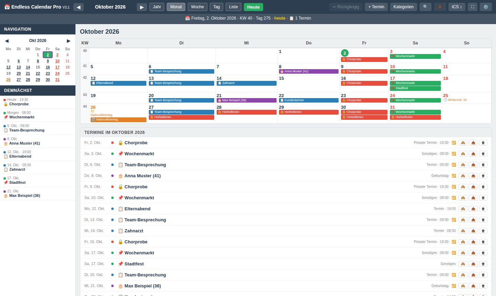
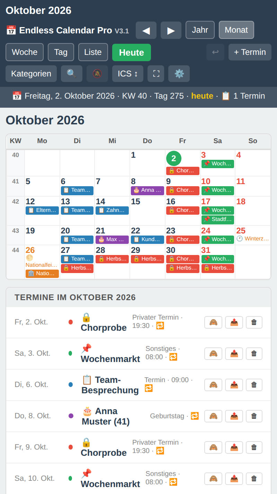
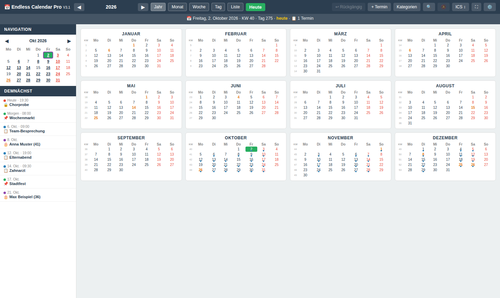
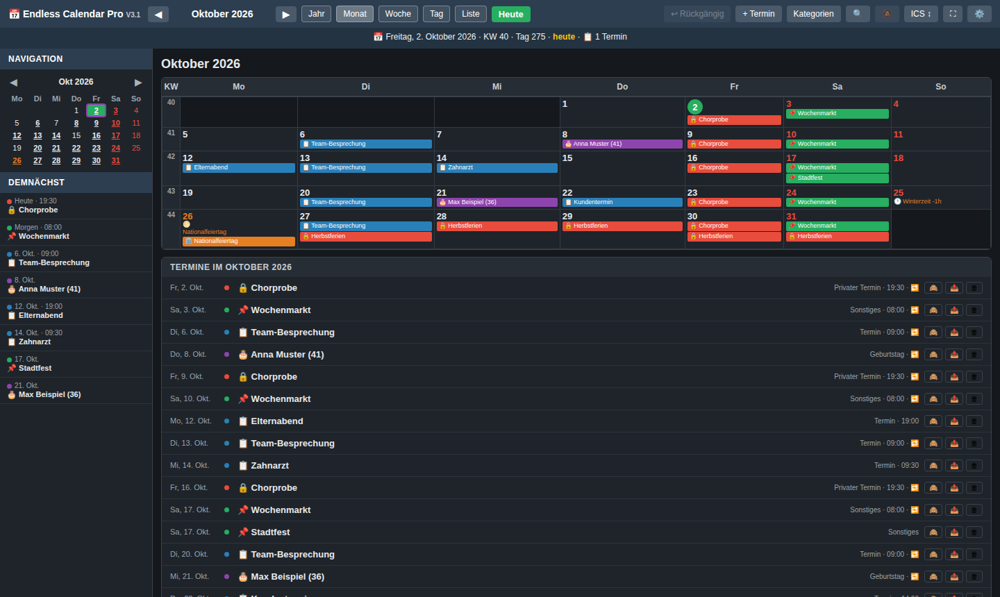

Was er kann
Probier im Kalender oben den Rechtsklick und zieh einen Termin auf einen anderen Tag.
- Fünf Ansichten
- Jahr, Monat, Woche, Tag und Liste. Blättern mit Mausrad, Pfeilen oder Wischen; Mini-Kalender und „Demnächst“ stehen in der Seitenleiste.
- Bedienung mit der Maus
- Termin ziehen verschiebt ihn, mit Strg oder Umschalt wird er kopiert, auf einen anderen Termin abgelegt werden beide zusammengeführt. Das Rechtsklick-Menü kopiert, bearbeitet, verschiebt, blendet aus und löscht.
- Serientermine
- Wöchentlich bis jährlich, freie Intervalle, „erster Montag im Mai“, relativ zu Ostern oder Advent, Bedingungen für Wochentage und Monate, Ende nach n Terminen – und Ausnahmen für einzelne Vorkommen.
- Kategorien
- Eigene Kategorien mit Farbe und Emoji. Termine folgen der Farbe ihrer Kategorie, ganze Kategorien lassen sich ausblenden.
- Geburtstage und Feiertage
- Geburtstage zeigen das Alter, Gedenktage erinnern an Verstorbene. Österreichische Feiertage und besondere Tage werden für jedes Jahr berechnet.
- Suche und Konflikte
- Die Suche findet Titel, Notizen, Kategorien und Feiertage. Überschneidungen werden beim Speichern gemeldet.
- Rückgängig und Sicherheit
- Rückgängig für die letzten 30 Änderungen, Sicherungspunkte vor jedem Import und eindeutige Löschknöpfe. Die Rückfrage bei einzelnen Terminen lässt sich abschalten.
- Import, Export, Wartung
- ICS-Import mit Vorschau und ICS-Export für Google Kalender, Outlook und Thunderbird. JSON-Backup mit Zusammenführen oder Ersetzen. Die Wartung entfernt Duplikate nach einer Vorschau.
- Desktop und Mobil
- Dunkelmodus mit Akzentfarbe, Vollbild und ein Layout für das Handy mit Wischen und langem Drücken. Unter Android startet er vom Startbildschirm wie eine App.
Bilder
Ein Klick zeigt das Bild in voller Größe.








So benutzt du ihn
Es gibt nichts zu installieren.
Herunterladen
Speichere die HTML-Datei, wo du willst – auf der Festplatte, einem USB-Stick oder am Handy.
Öffnen
Öffne die Datei in Firefox, Chrome oder Edge. Der Kalender startet sofort und läuft ohne Internet.
Sichern
Speichere unter „ICS ↕ → JSON Backup“ regelmäßig eine Sicherungsdatei. Mit ihr ziehst du auch auf ein anderes Gerät um.
Wo deine Termine liegen
Die Termine liegen in deinem Browser, auf deinem Gerät. Wer die Browserdaten löscht, löscht auch die Termine – deshalb Backups anlegen.
„Kalender öffnen“ auf dieser Seite speichert sie in diesem Browser für diese Website. Die heruntergeladene Datei führt ihre eigenen, getrennten Termine.
Datenschutz und Lizenz
Der Kalender sendet keine Daten. Es gibt kein Tracking, keine Statistik und keine Werbung, und diese Seite lädt nichts von fremden Servern.
Frei und quelloffen unter der MIT-Lizenz. Fehlermeldungen und Ideen sind auf GitHub willkommen.